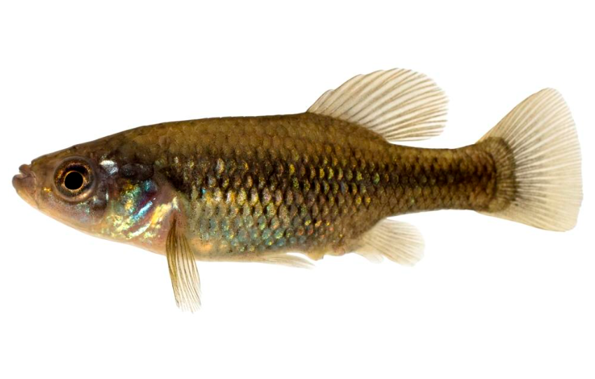

Systématique
- Ordre : Cyprinodontiformes
- Famille : Goodeidae
- Genre : Xenotoca
- Espèce : X. melanosoma
- Auteur : Fitzsimons, 1972

Xenotoca melanosoma est un goodeidé robuste et de taille respectable, se distinguant radicalement des autres membres de son genre par sa livrée sombre. Contrairement aux éclats colorés de X. doadrioi ou X. eiseni, cette espèce mise sur une élégance austère faite de tons gris ardoise, olive foncé et noir.
Le mâle atteint environ 7 à 9 cm, tandis que la femelle, particulièrement massive, peut dépasser les 10 cm. Le corps est haut, compressé latéralement, avec une tête puissante. La coloration générale est gris foncé à noir charbonneux, souvent plus intense chez les mâles dominants qui peuvent paraître totalement noirs sous certains éclairages. Les nageoires sont également sombres, parfois bordées d'un fin liseré plus clair.
L'espèce est classée "En danger" (EN) par l'UICN. Bien que historiquement répandue, ses populations sauvages déclinent fortement en raison de la pollution urbaine et agricole massive dans son aire de répartition, ainsi que de la compétition avec des espèces exotiques.
Xenotoca melanosoma est un poisson vigoureux et dynamique. Son tempérament est affirmé, et il peut se montrer dominateur envers des espèces plus fragiles. Il est impératif de lui offrir un volume d'eau conséquent pour accommoder sa taille et son activité incessante.
C'est une espèce grégaire qui doit être maintenue en groupe. Les interactions sociales sont fréquentes : les mâles paradent avec énergie pour établir une hiérarchie stricte au sein de la colonie. En aquarium, il apprécie les décors structurés mélangeant zones de nage libre et cachettes formées par des racines ou des plantes robustes (Anubias, Microsorum), car il a tendance à malmener les plantes aux feuilles trop tendres.
Mode : Vivipare matrotrophe.
La reproduction est typique des Goodeinae. Les embryons se développent dans l'ovaire et sont nourris par des trophotaeniae. La gestation dure environ 55 à 65 jours.
Les portées sont proportionnelles à la taille de la femelle et peuvent être très généreuses, allant de 20 à plus de 60 alevins. Les nouveau-nés sont particulièrement grands à la naissance (environ 15-18 mm) et présentent déjà une coloration grisâtre. Ils sont très robustes et acceptent immédiatement les nourritures usuelles broyées. Le cannibalisme est rare si les parents sont bien nourris, mais l'ajout de plantes flottantes est recommandé.
Dimorphisme sexuel : Le mâle possède un andropodium (nageoire anale modifiée) et une coloration noire plus intense, surtout en période de parade. La femelle est nettement plus grande et plus massive, avec un abdomen très arrondi lors de la gestation.
Espérance de vie : 4 à 6 ans en aquarium.
L'espèce est originaire du centre-ouest du Mexique, occupant les bassins du Rio Grande de Santiago, du Rio Ameca et du Rio Magdalena. Elle fréquente une grande variété d'habitats : rivières, sources, lacs et même des réservoirs artificiels, montrant une tolérance certaine à la turbidité.
L'eau de son habitat est alcaline et dure. Les températures varient de 18 à 25 °C. Le substrat est souvent composé de limon, de roches et de débris organiques où se développent les algues et le périphyton dont il se nourrit en partie.
Répartition

Origine naturelle :
- Mexique : États de Jalisco et Nayarit.
- Bassins des Rios Grande de Santiago, Ameca et Magdalena.
- Lacs d'altitude et systèmes fluviaux associés.
Bien que l'aire de répartition soit vaste, les populations sont de plus en plus isolées par les barrages et la pollution des eaux.
Paramètres de maintenance
Température : 18 à 24 °C. Très résistant aux variations fraîches.
pH : 7,0 à 8,2.
GH : 12 à 25 °dGH (eau dure).
Courant : Moyen.
Volume conseillé : Minimum 150 L pour un groupe de 6 à 8 individus adultes.
Régime alimentaire
Régime : Omnivore à tendance herbivore.
C'est un mangeur vorace. En aquarium, il accepte tout type de nourriture sèche, mais une part végétale très importante (spiruline, algues, épinards) est cruciale pour sa santé.
Il complète son régime par des proies vivantes ou congelées (vers de vase, artémias) qui favorisent la croissance des alevins et la fertilité des femelles.